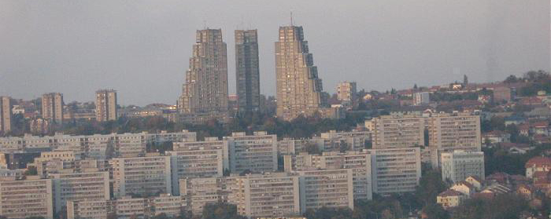
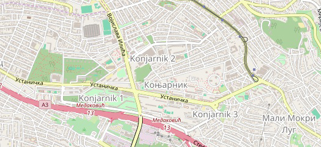

Кратка анкета:
Да ли сте задовољни нашим радом?
Имате предлоге?
Улогујте се и пишите нам

Коњарник је део Београда, главног града Србије.
Налази се на југоисточној периферији града код ауто-пута Загреб-Београд-Ниш. Ауто-пут пролази кроз Београд, и код места где напушта Београд и наставља у правцу Ниша, налази се овај живописни део Београда који према попису из 2002. има 23.394 становника.
Препознатљив симбол овог насеља је источна капија Београда.
Коњарник почиње око 4 километра југоисточно од центра Београда (Теразија), протеже се око на 2 километра, углавном дуж Устаничке улице, северне стране аутопута и између Устаничке и улице Војислава Илића. Граничи се са другим крајевима: Душановац на истоку, Шумице на североистоку, Цветко на северу, Мали Мокри Луг на западу, а на југу га аутопут разграничава од Медаковића 3 и Маринкове баре.
Источни део Коњарника припада општини Звездара, а остатак Вождовцу.
Коњарник 1
Најзападнији део Коњарника налази се између ул. Устаничке на северу, аутопута на југу и ул. Војислава Илића на истоку. Граничи се са крајевима: Душановац на истоку, Шумице на северу и Маринкова Бара на југу, преко аутопута. Особите су, као и за остатака Коњарника, велике, правоугаоне стамбене зграде. У ул. Љермонтова се налази велика полицијска станица. Постоји стамбено-комерцијални комплекс "КоШум" и стамбена зграда "Тестера", названа тако због своје цик-цак конструкције. Насеље је од аутопута одвојено зеленим шумским појасем.
Коњарник 2, 3
Део насеља источно од ул. Војислава Илића, са Устаничком као централном улицом. Осим многих великих стамбених зграда, постоји и индустријска зона, дуж улица Војислава Илића и Мис Ирбијеве (фабрике "Прецизна механика", "Букуља", "Метал"). Развијају се трговачке зоне око окретнице "Ластиних" аутобуских линија на раскрсници Устаничке и Војислава Илића.
